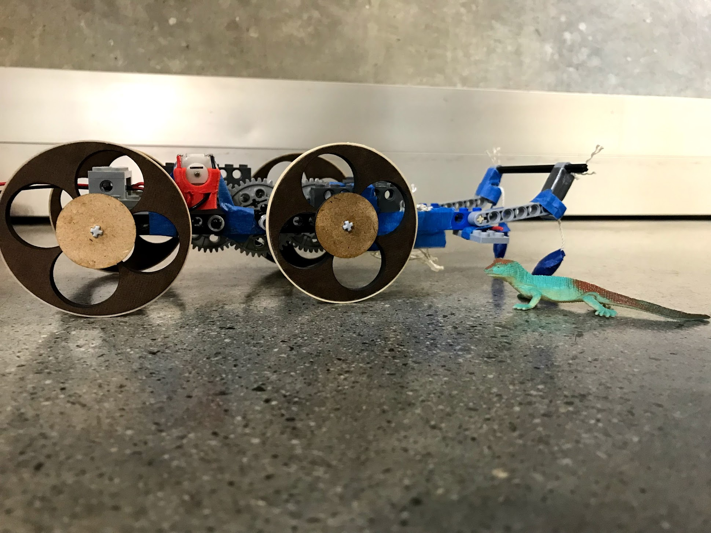
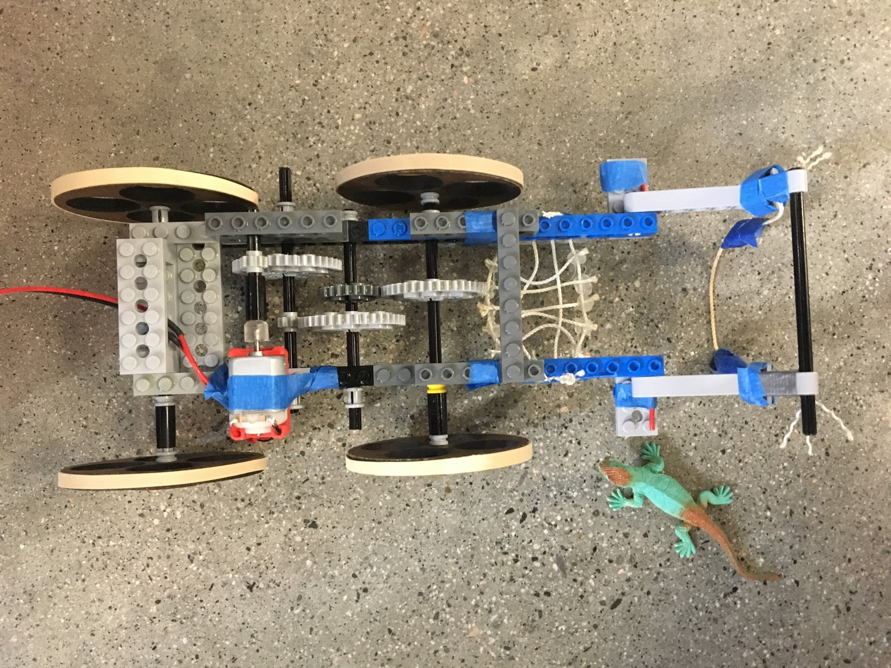

Crawler Engineering Project
The project
For ME112: Mechanical Systems Design, teams were tasked with helping the Stanford salamander population find safety using the small tunnels under the roads. Our project is a crawler that can do just that. Pictured above is the final version of the crawler my team and I built after many iterations. Below is our team design document.
This engineering project was one of the few that put emphasis on communicating the results. The crawler helped teach me that writing something in order to connect with an audience can be another form of human-centered design.

In addition to building our final robot, my team and I also polished off our design document. After finishing the crawler and demonstrating its functionality on gameday, we wrote a report on the building process, aimed toward other engineers. The technical report discusses concepts we learned during the class and contains an analysis of our creation.
Artifact Reflection
Writing the design report for the crawler robot was one of the best exercises I’ve had in writing for a specialist audience. Communicating exactly how we designed our gear train, catch mechanism and other essential features was practice in using specific, technical rhetoric and details to explain what we had made.
This project made me think about the human connection to engineering in a new way. The assignment, to build a robot to help salamanders, had been given to us by our instructors and while it was a fun prompt, it did not have a very human-centered need behind it. I found a human element in the project somewhere else: connecting to the paper’s audience. When giving us advice on how to create a good, compelling design document, the instructors of the course, gave us the advice to write so that engineers reading the paper could build what we had made and understand the design decisions we had made during our process. Thinking about the paper through this lens changed my understanding and helped me ensure that each element we put in our paper served a purpose. If we didn’t care about some of the data we put into the paper and it didn’t help us understand our robot better, why would someone reading our document care? In creating a report with a human-centered lens, I had a much better idea of how to write with intention.
After this assignment, my same team and I went on to build another robot for the same class. The second ME112 group project is also in this portfolio under jumper. While I am very proud of our crawler robot, based on feedback and experience my team and I were able to carry what we learned to the jumper final document. In the artifact reflection for the jumper paper, I am more specific about these changes, but I think it is important to note here that the Crawler was an important starting point for my growth and improvement in creating good design documents that serve a purpose.